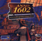
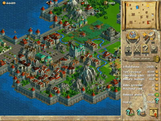

Anno 1602
Dieser Artikel wurde für die folgenden Ubuntu-Versionen getestet:
Dieser Artikel ist mit keiner aktuell unterstützten Ubuntu-Version getestet! Bitte diesen Artikel testen und das getestet-Tag entsprechend anpassen.
Zum Verständnis dieses Artikels sind folgende Seiten hilfreich:

Anno 1602  ist ein 2D-Strategiespiel aus der Win-95-Ära mit Spaß-Faktor und gleichzeitig recht hohem Anspruch. Es ist das erste Spiel der beliebten Anno-Reihe und ist mit zahlreichen Preisen ausgezeichnet worden. Es geht darum, als Eroberer in der Neuen Welt Inseln zu besiedeln, seinen Einfluss zu vergrößern.
ist ein 2D-Strategiespiel aus der Win-95-Ära mit Spaß-Faktor und gleichzeitig recht hohem Anspruch. Es ist das erste Spiel der beliebten Anno-Reihe und ist mit zahlreichen Preisen ausgezeichnet worden. Es geht darum, als Eroberer in der Neuen Welt Inseln zu besiedeln, seinen Einfluss zu vergrößern.
Der vierte Teil der Reihe wird im Artikel Anno 1404 beschrieben.
Installation¶
Für das Spielen wird wine [5] ab Version 0.9.30 benötigt.
Die Installation verläuft problemlos, indem die auf der CD vorhandene Datei Setup.exe mit Wine ausgeführt wird.
|  |
| Spielszene |
Start¶
Der Start verläuft einfach, man kann das Programm über
"Hauptmenü -> Wine -> "Programme -> Anno 1602 -> Anno 1602"
starten [4].
Im Spiel¶
Sobald das Spiel gestartet ist, kann man zwischen Einzelspieler- und Mehrspielermodus wählen. Wählt man die Option Einzelspiel, so kann man daraufhin zwischen einem "Einführungsspiel", dem "Endlosspiel" und dem "Nach-langer-Reise"-Modus entscheiden. Anfänger sollten zuallererst das "Einführungsspiel" auswählen, um mit dem Spiel vertraut zu werden. Das Endlosspiel ist ein Spiel, in dem man gegen drei Computergegner spielt. Sowohl Liebhaber von kriegsbasierten Spielen, als auch eher friedliebende Spieler werden mit dem Endlosspiel ihren Spaß haben, denn es ist nicht nötig, mit seinen Gegnern zu kämpfen. Das Spiel ist im wahrsten Sinne des Wortes endlos, d.h. es endet nie. Man kann alle seine Gegner besiegen und seine Bürger können noch so glücklich sein, man kann das Spiel nicht gewinnen. Das "Nach-langer-Reise"-Spiel ist eine Art Kampagne, in der man immer neue Aufgaben gestellt bekommt. Im Mehrspielermodus können die selben Spiele gespielt werden, bloß dass sich bis zu drei menschliche Spieler dem Spiel anschließen können. Das Spiel sollte vom stärksten Rechner aus gehostet werden.
Achtung!
Im Mehrspielermodus befindet sich ein Bug (s. Problembehebung)!
Erweiterungen¶
Als Erweiterungen existieren die im Handel erhältliche Königsedition und die "Neue-Karten-und-Abenteuer-CD" für mehr Karten und Missionen im "Nach langer Reise"-Modus. Beide sind mit Ubuntu via Wine kompatibel.
Spielen ohne CD¶
Um ohne CD spielen zu können, geht man wie folgt vor:
Terminal starten[3]
ISO-Image erstellen, sieht erstellen eines Images über die Kommandozeile
Image einhängen, siehe, Inhalt von Images lesen
winecfg starten
Auf den Reiter "Laufwerke -> Hinzu"
Laufwerksbuchstabe auswählen (Hier im Folgenden
x)Reiter "Erweitert"
Hier unter "Bezeichnung" "anno1602" eintragen ("Typ" auf "automatisch" lassen)
Nun in den "dosdevices" Ordner von wine wechseln
Dort die folgenden Symlinks hinzufügen:
ln -s /PfadZurIso/anno1602.iso /PfadZumWineDosdevice/x:: ln -s /PfadZumEinhängepunkt/ /PfadZumWineDosdevice/x:
Man sollte auf die Doppelpunkte achten! Zwei Doppelpunkte für das CD-Image, einen für den Mount-Punkt. Dabei müssen immer die vollständigen Pfade eingegeben werden.
Danach sollte das Spiel ohne Probleme laufen.
CD-Laufwerk in der Registry ändern¶
Falls Anno1602 immer noch keine CD erkennt, muss man in der Registry von wine das von Anno benötigte CD-Laufwerk ändern:
Terminal starten
"wine regedit" eingeben
"Bearbeiten -> Suchen"
"anno1602" eingeben
"suchen"
Dann müsste dort "CDROM_DIR" zu finden sein. Falls dies nicht der Fall ist, muss man es wiederholen bis es gefunden wurde. Oftmals gibt es mehrere Keys, zum Beispiel liegt der Key unter: "HKEY_CURRENT_USER -> Software -> ANNO1602".
Wenn man "CDROM_DIR" gefunden hat, muss man dies mit einem Doppelklick öffnen. Danach muss man unter "Daten" das gewünschte Laufwerk eintragen, sprich das selbe Laufwerk, welches man in winecfg eingetragen hat.
Problembehebung¶
Es bestehen zwei bekannte Fehler unter Ubuntu. Diese werden im Folgenden beschrieben.
Schwarzer Bildschirm¶
Beim Starten des Spiels ohne vorherige Einstellung des emulierten Desktops startet das Spiel nicht, sondern der Bildschirm wird schwarz und zeigt nur noch die Meldung "out of range" an. aus dieser Situation kommt man durch das Wechseln in den Textmodus mit den Tasten Strg + Alt + F1 . In der Konsole [3] gibt man
killall wine
oder
killall 1602.exe
ein. Danach wechselt man mit Hilfe der Tasten Strg + Alt + F7 wieder zurück in den grafischen Modus, wo Wine jetzt beendet sein sollte. Um den Fehler zu verhindern lässt man das Spiel in einem emulierten Desktop laufen [5].
Kein Multiplayer¶
Beim Versuch des Beitritts zu einem Multiplayerspiel, oder wenn man dieses starten will, kommt es zu folgender Fehlermeldung:
Auf diesem Rechner wurden keine Direct Play Provider gefunden! Beenden sie das Programm und überprüfen sie die Direct Play Installation.
Um das Problem zu beheben benötigt man DirectPlay. Dies kann man installieren indem man
winetricks directplay
ausführt. Danach sollte man wie gewohnt den Multiplayer-Modus des Spiels nutzten können. Allerdings sollte man etwas Geduld mitbringen, das Erstellen und Einklincken in Spiele kann recht lange dauern. Außerdem sollte man den nächsten Punkt beachten.
Leeres Fenster¶
Es kann vorkommen, dass, wenn man sich mit einer Gruppe über TCP/IP verbinden möchte, nur ein leeres Fenster angezeigt wird. In der Tat ist allerdings ein Fenster aktiv, in dem man die IP-Adresse des Servers/Host angibt, sprich man tippt "blind" diese ein und bestätigt mit ⏎

Infobox¶
| Anno 1602 | |
| Genre: | Strategie-/Aufbauspiel |
| Sprache: | |
| Veröffentlichung: | Oktober 1997 |
| Entwickler: | Sunflowers Entertainment, Max Design |
| Verleger: | Sunflowers Entertainment  |
| Spielmodi: | Singleplayer, Multiplayer |
| Steuerung: | Maus, Tastatur |
| Medien: | CD (1) |
| Läuft mit: | Wine |
- Erstellt mit Inyoka
-
 2004 – 2017 ubuntuusers.de • Einige Rechte vorbehalten
2004 – 2017 ubuntuusers.de • Einige Rechte vorbehalten
Lizenz • Kontakt • Datenschutz • Impressum • Serverstatus -
Serverhousing gespendet von